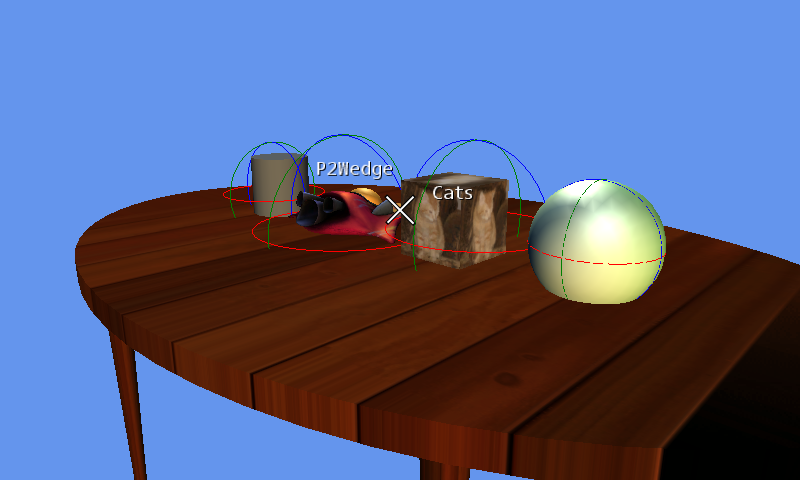

Picking Sample
Ported from Microsoft's XNA 4.0 Picking Sample.
Source for this sample on GitHub ↗

Play ▸Opens in a new tab.
About this sample
Four models sit on a textured table while the camera circles them. Pointing at a model casts a ray into the scene and shows its name above it. The colored wireframes show each model's bounding sphere, which the sample uses to find intersections.
Controls
| Action | Mouse |
|---|---|
| Identify models | Move the pointer over a model |
| Exit | Escape |